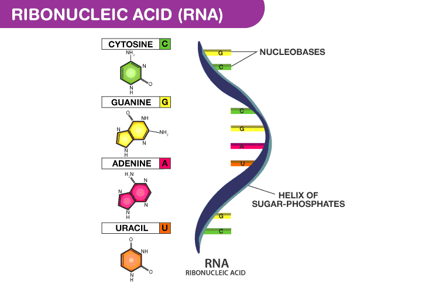
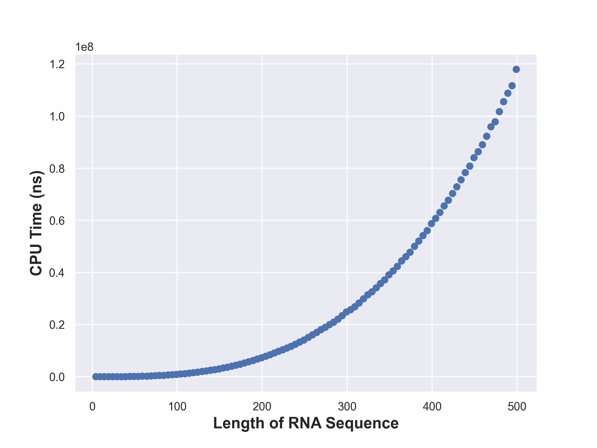
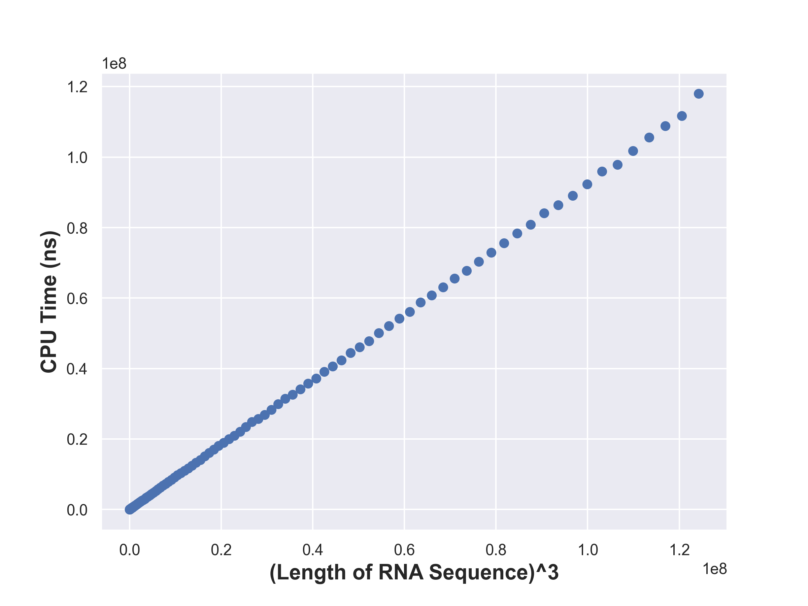
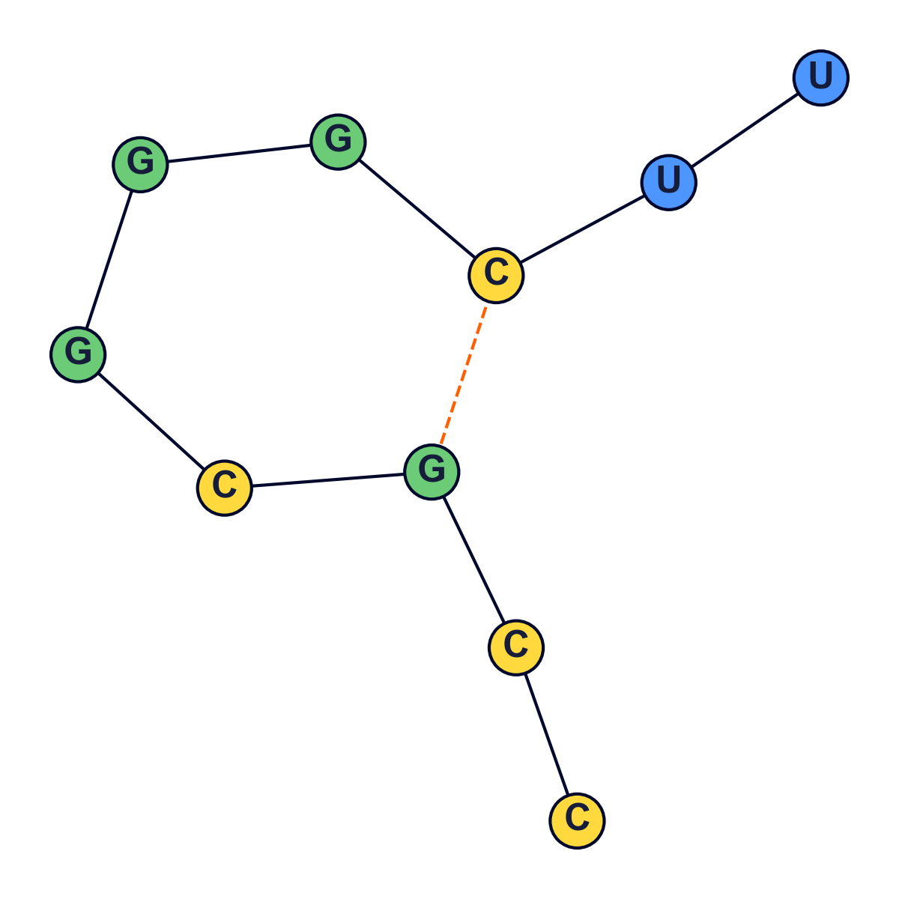
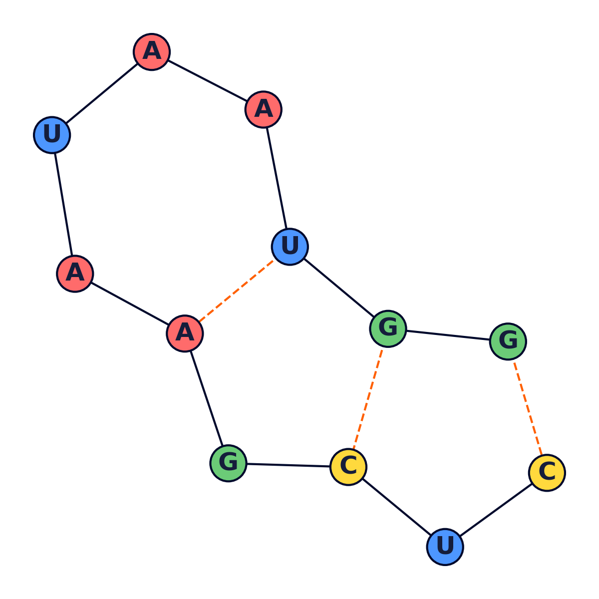
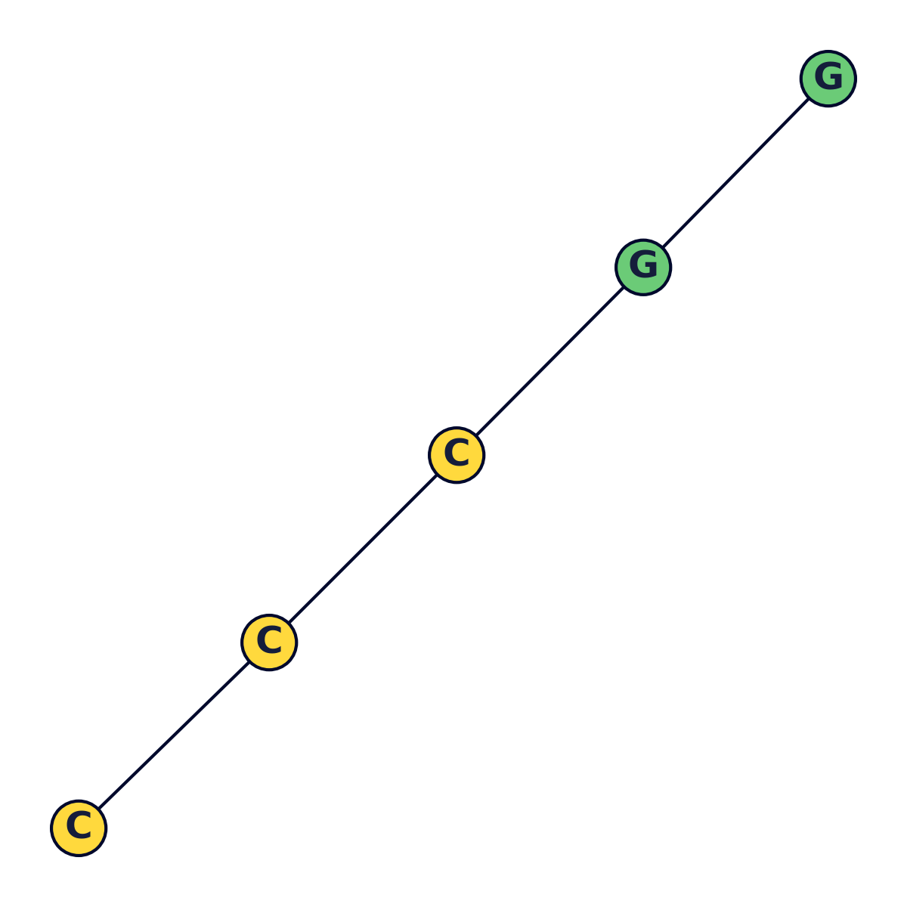
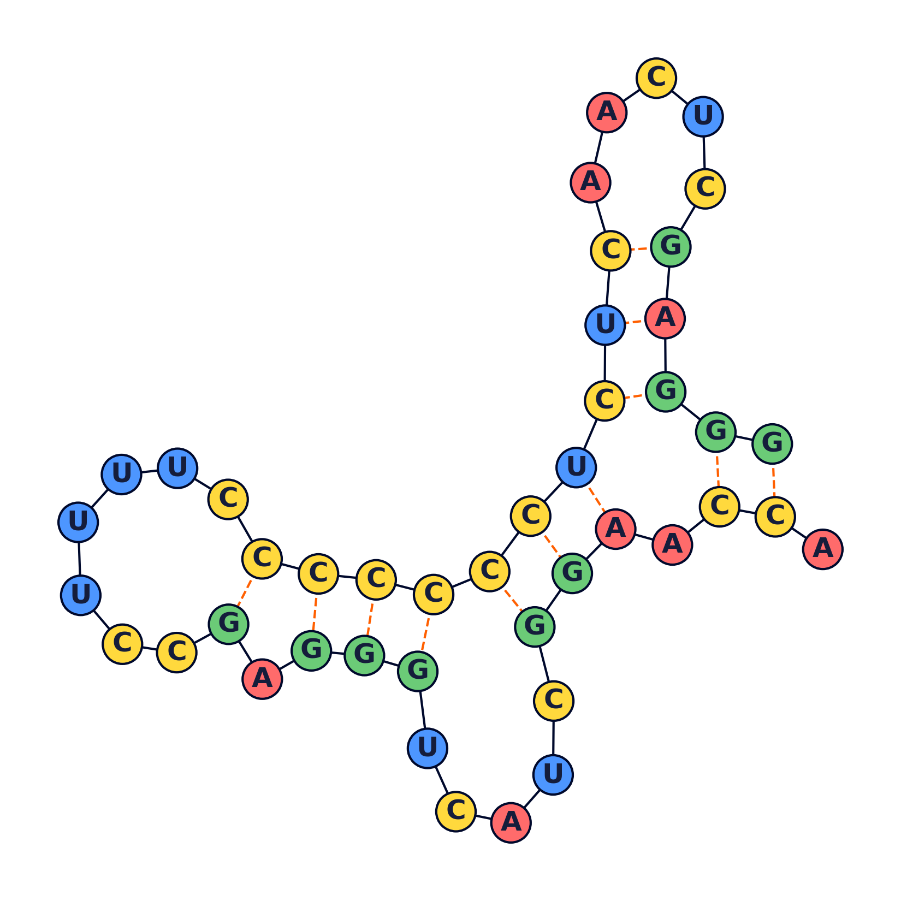
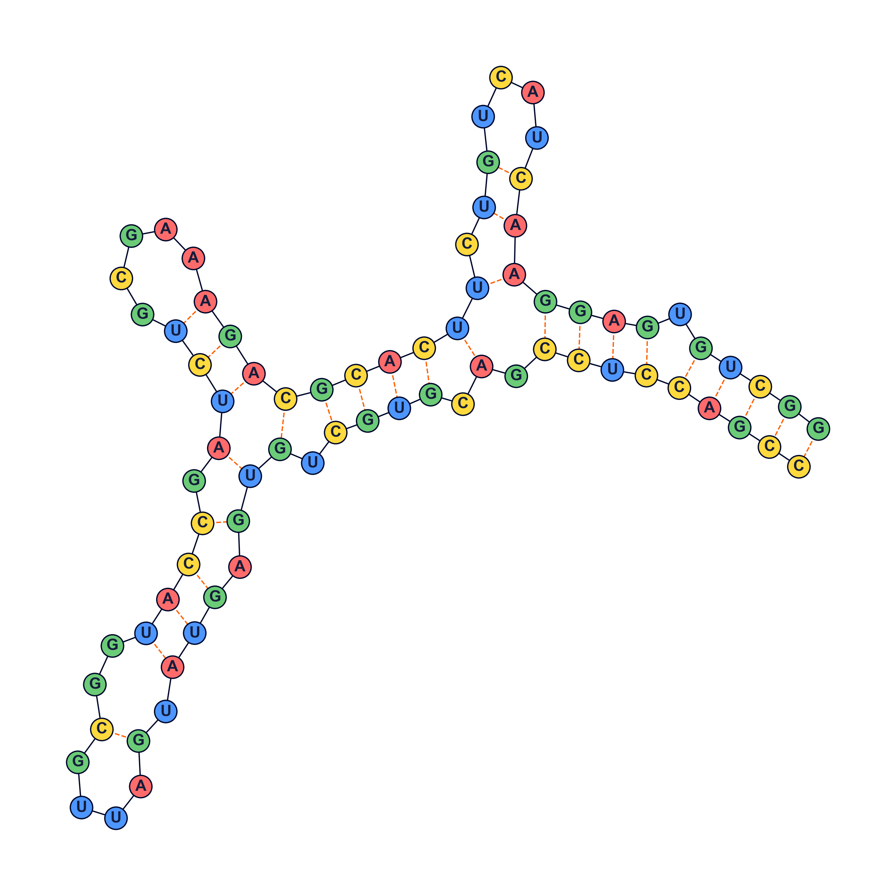

RNA secondary structure prediction
Given a nucleic acid sequence of RNA, find a
maximum matching of
\(\{A,U\}\) or \(\{C,G\}\) base pairs without knots or sharp turns.
This is a modern C++ implementation that employs (iterative)
dynamic programming on
intervals to find the cardinality of the maximum matching of base pairs as well as the
base pairs in the matching.
Background
RNA is a nucleic acid similar to
DNA, but with only a single, helical strand of bases. It plays a key role in
turning DNA instructions into functional proteins. RNA molecules fold into
complex secondary structures which govern their behaviour.
Various rules govern secondary structure formation:
-
Pairs of bases match up. Each base matches with no more than one other base.
-
Adenine always matches
with Uracil, while
Cytosine always matches
with Guanine and vice
versa.
- There are no kinks in the folded molecule.
- Structures are knot-free.
Given an RNA molecule, the aim is to predict its secondary structure.

An RNA molecule can be represented by a string \(B = b_1 b_2 \ldots b_n\), where each
character \(b_i \in \{ A, C, G, U \}\).
A secondary structure on \(B\) is a set of pairs \(S = \{ (i, j) \ldots \}\), where \(1
\le i, j \le n\), satisfying the following rules.
-
No sharp turns: The ends of each pair are separated by at least
some number of intervening bases i.e. if \((i, j) \in S\), then \(i \lt j -
\texttt{MIN\_LEN}\).
-
Complementary base pairs: The elements in each pair in S consist of
either \(\{A,U\}\) or \( \{C,G\}\) (in either order).
- \(S\) is a Matching: No base appears in more than one pair.
-
No knots: If \((i,j) \in S\) and \((k,l) \in S\), then we cannot
have \(i \lt k \lt j \lt l\).
Thus the problem boils down to finding a
maximum matching of
\(\{A,U\}\) or \(\{C,G\}\) base pairs without knots or sharp turns.
Dynamic Programming solution
Let \(dp_{l, r }\) denote the cardinality of the maximum matching in \(b_l b_{l+1}
\ldots b_r\) of the sequence \(B\). Then it is easy to notice the following recurrence.
\[ dp_{ l, r } = \max \begin{cases} \text{ } \text{ } \text{ } \text{ } \text{ } \text{
} \text{ } \text{ } \text{ } \text{ } \text{ } \text{ } \text{ } \text{ } \text{ }
\text{ } \text{ } \text{ } \text{ } \text{ } \text{ } \text{ } 0 & r - l \le
\texttt{MIN\_LEN} \\ \text{ } \text{ } \text{ } \text{ } \text{ } \text{ } \text{ }
\text{ } \text{ } \text{ } \text{ } \text{ } \text{ } \text{ } \text{ } \text{ } \text{
} \text{ } dp_{ l, r-1 } & r - l \gt \texttt{MIN\_LEN} \\ \underset{l \le m \le r}{\max}
\text{ } \text{ } dp_{ l, m-1 } + 1 + dp_{ m+1, r-1} & b_m \text{ and } b_r \text{ are
complementary bases} \end{cases} \]
The required value is \(dp_{ 1, n }\) — the maximum matching in the sequence \(B\).
Timing Analysis


Each state takes \(\mathcal{O}(r-l)\) time to compute and there are \(\mathcal{O}(n^2)\)
states. Hence the time complexity of computing all the dp states is
\(\mathcal{O}(n^3)\).
Also, since there are \(\mathcal{O}(n^2)\) dp states which must be stored in memory, the
space complexity is \(\mathcal{O}(n^2)\).
Visualization
The following were generated using a python script.




